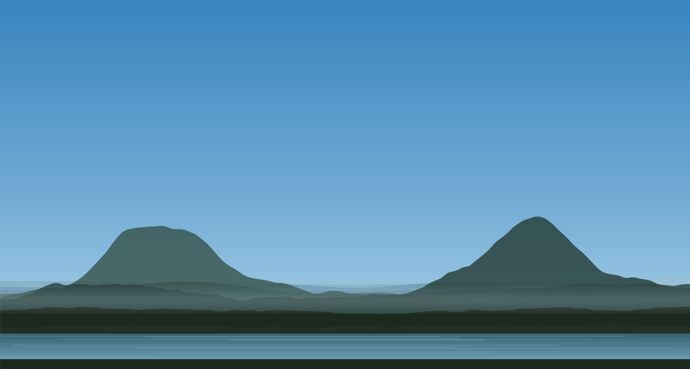

Statistical strategy partner
Practical solutions anchored to your objectives, rigor in every detail, and teams equipped to carry it forward.
Statistical expertise for lean, ambitious teams, without the overhead of a large vendor.
Start a conversationStatistics turns data into evidence at every step, from idea to impact, making both central to your success. Each decision cascades, shaping your cost, timelines, and trajectory. We help you navigate each one with clarity.
Why Cascade
Large CROs excel at routine studies for big sponsors. Lean teams need something different.
Collaborative
We engage you throughout, explaining our approach, not just our results, so every decision gets you closer to your goals.
Innovative
When standard methods fall short, we draw on active research and an academic network rather than forcing your problem into a template.
Transparent
Open methods, clear assumptions and limitations, defined scope, upfront costs: no black boxes and minimal unexpected add-ons.
Efficient
Planning ahead, even for surprises, means less rework, freeing bandwidth to adapt as plans change and making your resources go further.
We work with
- Biotech and other data-driven start-ups
- Pharmaceutical companies
- Academic and independent research institutes
- Local government agencies
- Nonprofit and community organizations
Wherever you are in your journey, a short conversation is a good place to start.
Get in touch